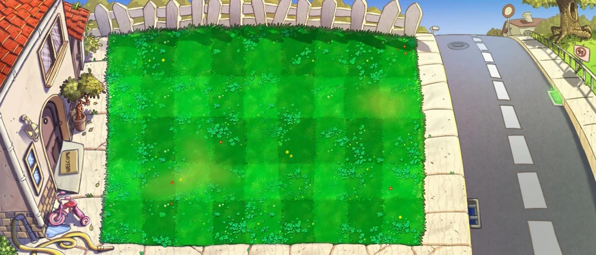
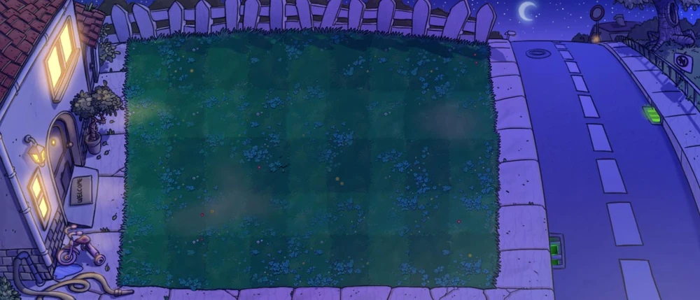
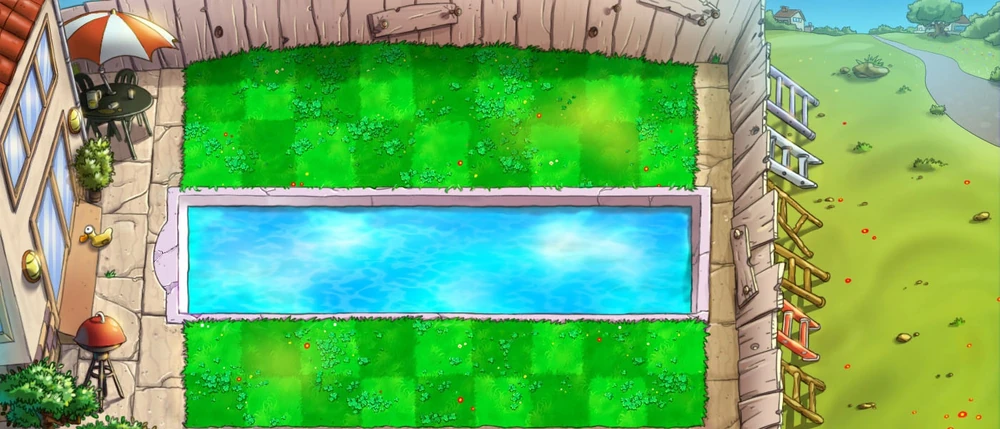
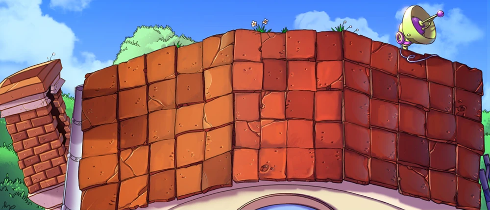
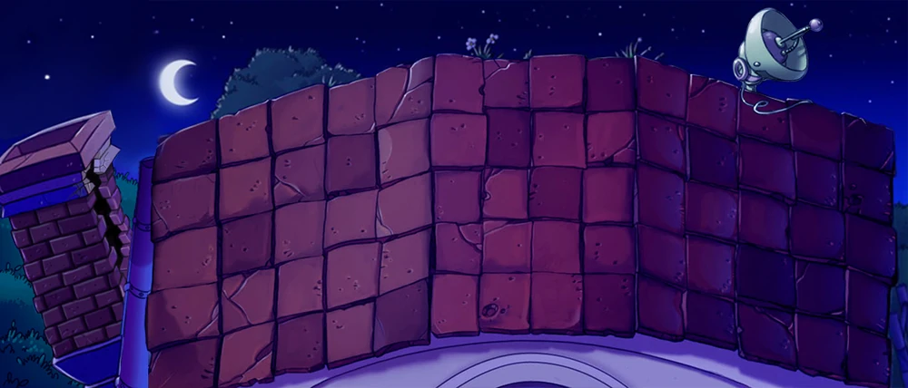

DAY
Day, also known as The Zombies are Coming in Plants vs. Zombies: Endless Edition, is the setting of the first ten levels of Adventure Mode in Plants vs. Zombies, and is the most basic area in the game, taking place in the front yard of the player's house. Because sun falls from the sky on these levels, it is easier to attain a large number of plants, although this does not mean the player should plant as many plants as they can. There will also be falling sun in the pool and on the roof.
At the beginning of the game, the player's lawn will only have one strip of grass, and as he continue, more strips of lawn will appear (three in 1-2 and 1-3 and five in 1-4 and onwards).
NIGHT
The Night area, also known as Nightfall in Plants vs. Zombies: Endless Edition, is the second stage of Adventure Mode and the setting of the ten levels after the daytime levels in Plants vs. Zombies. It is exactly like the Day levels in layout except that it takes place in the nighttime; therefore, mushrooms stay awake and sun does not fall from the sky. Because of the lack of falling sun, it is much harder to defend the home without using mushrooms, and the player's sun producers have to be well-guarded.
Sun-shrooms take the place of Sunflowers, and Scaredy-shrooms and Puff-shrooms take the place of Peashooters. Also, during this stage, graves will appear at the beginning of the level in random points on the half of the lawn farthest from the player's house. They cannot be planted on, and zombies surface from them during the final wave of a level. However, the graves can be removed by Grave Busters.
POOL
Pool, also known as Backyard Emergency in Plants vs. Zombies: Endless Edition, is the third Adventure Mode area in Plants vs. Zombies. It is the backyard of the house in which the player lives, but unlike the front lawn (where the day and night stages take place) there are six rows on the lawn instead of five. The middle two rows are the pool, which requires the player to plant Lily Pads before most other plants.Before the player buys Pool Cleaners, Lawn Mowers in the pool rows will kill only the first zombie that steps out of the water and then splash into the pool. During the final wave in any pool level, Ducky Tube Zombies of all three types will surface from a 4x2 rectangle at the far right of the pool with or without seaweed on their heads.
FOG

Fog, also known as Night Pool, is the fourth stage of the Adventure Mode section of Plants vs. Zombies. They take place in the backyard of the player's house, but during the night. Also, in each level, up to two-thirds of the lawn is covered in fog (the fog-covered area increases in size as you beat more levels), in which both plants and zombies are very difficult to see.
During the final wave (every wave in Survival), Ducky Tube Zombies and their variants surface from random points in the four-by-two rectangle of the pool farthest from the player's house. During Level 4-10, a conveyor-belt level, a storm rolls in resulting from fog in previous levels signalling its imminence, making the screen pitch black between the flashes of lightning illuminating the yard. Along with the Adventure Mode levels, there are four mini-games that take place in the fog: It's Raining Seeds, Dark Stormy Night, Air Raid, and Invisi-ghoul.
ROOF
The Roof, also known as Roof Battle in Plants vs. Zombies: Endless Edition, is the fifth area of Adventure Mode and takes place on top of the player's house.It consists of a 5x5 sloped side at the back and a 4x5 straight side in front with a satellite dish on the zombie side and a chimney on the player's side where the zombies enter when you let one enters the house.
NIGHT ROOF
Night Roof or Roof Night is the sixth and final area of Adventure Mode that combines the Roof and Night areas. It has only one level in it, which is when the player is fighting with Dr. Zomboss. The aforementioned level is Level 5-10. In the level, the player will only get one mushroom, which is the Ice-shroom. It is used to extinguish the fireballs that Dr. Zomboss breathes out, and is possibly the only reason the level is at Night (so that players wouldn’t need to use the coffee beans to wake them up.) For the iceball, the player must use a Jalapeno to melt it.
The only Night Roof mini-game is Dr. Zomboss's Revenge. However, the player can also play Survival: Night Roof (Endless) on the Night Roof, which requires some hacks.